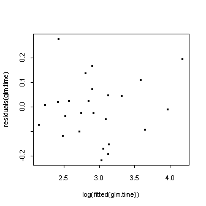
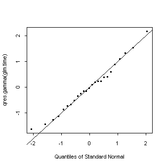

| / Home |
Keywords: linear regression, influence, outliers, gamma regression.
A soft drink bottler is analyzing vending machine service routes in his distribution system. He is interested in predicting the amount of time required by the route driver to service the vending machines in an outlet. This service activity including stocking the machine with beverage products and minor maintenance or housekeeping. The industrial engineer responsible for the study has suggested that the two most important variables affecting the delivery time are the number of cases of product stocked and the distance walked by the route driver. The engineer has collected 25 observations on delivery time (minutes), number of cases and distance walked (feet).
Data File (tab-delimited text)
| Montgomery, D. C., and Peck, E. A. (1992). Introduction to Regression Analysis. Wiley, New York. Example 4.1 |
The data is highly skew without transformation. Montgomery and Peck use it to illustrate influence and outlier measures.
A gamma regression model fits well. One might expect the intercept to be zero, but this does not appear to be the case. There is no evidence of any dispersion effects.
> glm.time <- glm(Time~Cases+Distance,family=tweedie(var.power=2,link.power=1))
> summary(glm.time)
Call: glm(formula = Time ~ Cases + Distance, family = tweedie(var.power = 2,
link.power = 1))
Deviance Residuals:
Min 1Q Median 3Q Max
-0.2172532 -0.09177765 -0.01094719 0.04847197 0.2778221
Coefficients:
Value Std. Error t value
(Intercept) 4.39767525 0.78103500 5.630574
Cases 1.55172654 0.16941397 9.159378
Distance 0.01006716 0.00285558 3.525434
(Dispersion Parameter for Tweedie family taken to be 0.017002 )
Null Deviance: 7.705974 on 24 degrees of freedom
Residual Deviance: 0.3661046 on 22 degrees of freedom
Number of Fisher Scoring Iterations: 3
Correlation of Coefficients:
(Intercept) Cases
Cases -0.5352342
Distance -0.1580529 -0.6442069
> plot(log(fitted(glm.time)),residuals(glm.time))

> qqnorm(qres.gamma(glm.time))

> abline(0,1)
> dglm.time <- dglm(Time~Cases+Distance,~Cases+Distance,method="ml",family=tweedie(var.power=2,link.power=1))
> anova(dglm.time)
Analysis of Deviance Table
Tweedie double generalized linear model
Response: Time
DF Seq.Chisq P Adj.Chisq P
Mean model 2 76.17080 0.0000000 62.36841 0.0000000
Dispersion model 2 0.32317 0.8507928 0.32317 0.8507928
|
Home - About Us -
Contact Us Copyright © Gordon Smyth |